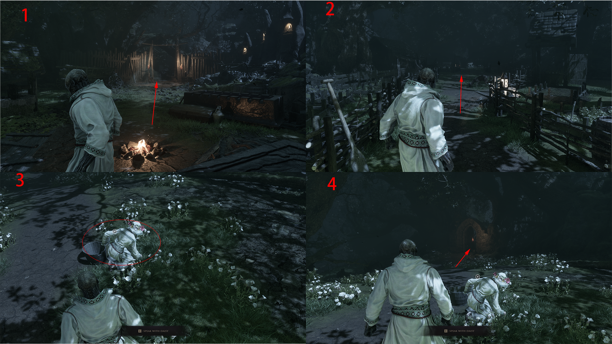

Main story · route draft
Prologue
Walkthrough
An image-led route through the opening area. Follow the red numbered panels in order; each arrow marks the next landmark or interaction.
Original gameplay draft · route text in progress- Start
- Opening area
- Focus
- Follow Daisy and the marked path
- Next area
- Marrow Keep
Follow the prologue route
- Use panel 1 to find the first path forward from the campfire.
- Continue through the fenced route in panel 2; the next direction is marked in red.
- Approach Daisy in panel 3, then follow the cave-side route shown in panel 4.
- Use the remaining numbered boards in the image as the visual sequence into the opening transition.
